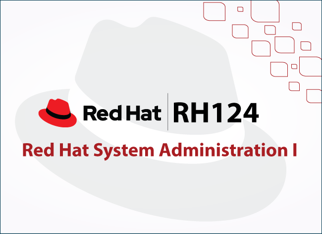
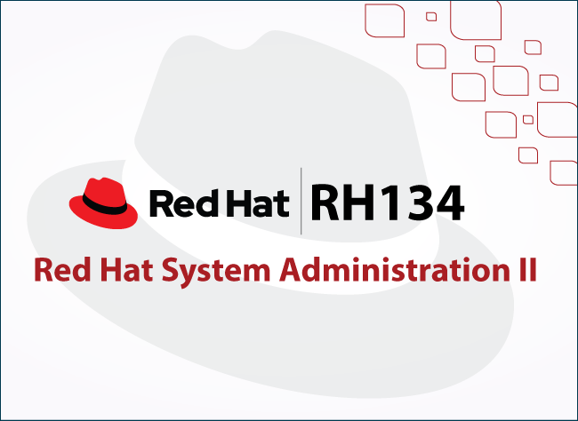
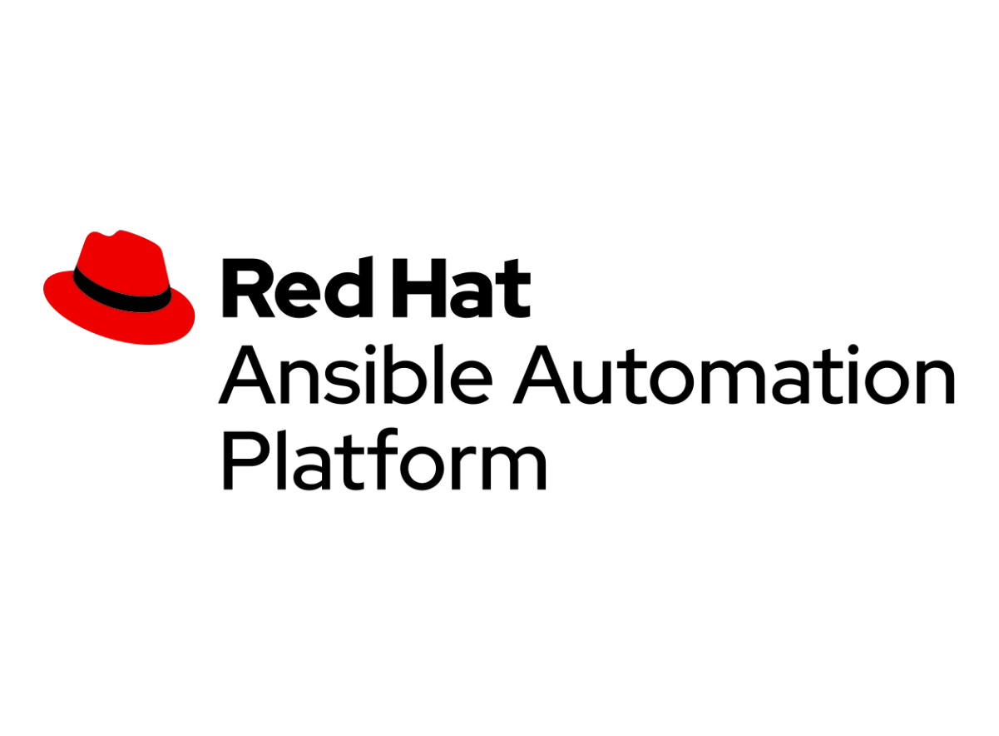

RH124, RH134 & DO457 — A Deep Dive into Key Concepts, Learning Resources and Personal Insights

Table of Contents
Introduction
Linux is a very common topic nowadays in the world of Software development, System Administration, DevOps, database management, and not to mention Security Operations. In this blog, I tried to cover as much as I could not only on RH124, RH134, DO457 but also on Linux in general highlighting useful materials and resources for future reference.
Disclaimer: It’s crucial to understand your learning style then adapt to what is more convenient for yourself. In fact, there are several ways you can learn and master Linux either from the official documentation, YouTube channels or 3rd party providers. Thus, whether the below information are new or a simple reminder to you, feel free to share, and recommend more tips / materials as your contribution is highly appreciated. Let’s dive in!!
System Administration I (RH124)

RH124 is an introductory course that covers the fundamental skills needed to manage and administer Red Hat Enterprise Linux systems. It teaches key concepts such as user and group management, package installation, file system navigation, and essential networking commands.
Main topics covered in RH124
- Linux Essentials: Command-line basics, file system navigation, and text file manipulation.
- User & Group Management: Creating, modifying, and managing users, groups, and permissions.
- Software Management: Installing, updating, and removing packages using RPM/YUM/DNF.
- System Services & Logging: Managing systemd services, checking logs with journalctl, and troubleshooting.
- Basic Networking & Storage: Configuring IP addresses, mounting storage, and using partitions.
System Administration II (RH134)

RH134 builds on RH124 and dives deeper into more advanced system administration topics, including storage management, security policies, and network configuration. It focuses on automating tasks using shell scripting, storage management and configuring network services such as DNS and NFS.
Key Concepts Highlighted in RH134
- Advanced User & Group Management: sudo privileges, ACLs, and SELinux policies.
- Storage Management: LVM, disk partitioning, mounting file systems, and swap management.
- Networking & Firewalls: Configuring network interfaces, troubleshooting, and managing firewall.
- Process & Performance Management: Monitoring resource usage, scheduling tasks with cron/systemd timers.
- System Automation & Scripting: Writing Bash scripts to automate administration tasks.
- Linux Essentials: Command-line basics, file system navigation, and text file manipulation.
Network Automation with Ansible (DO457)

DO457 focuses on automating network management tasks using Ansible, a powerful automation tool. The course covers how to use Ansible to configure network devices, deploy configurations, and manage network infrastructure efficiently.
Significant Points Addressed in of DO457
- Introduction to Ansible: Setting up Ansible, preparing for development, and managing inventories.
- Playbook Development: Writing, running, and troubleshooting Ansible playbooks.
- Variables & Facts: Managing variables, gathering facts, and using surveys to configure systems.
- Task Control: Implementing loops, conditionals, and handling task failures in playbooks.
- Network Automation: Simplifying network administration with roles, templates, and platform-independent modules.
Valuable Resources & Materials
As previously stated, there are numerous ways to learn Linux, System Administration, Ansible and the list goes on. Consequently, I have tried my very best to compile several platforms that I believe would ease the process for anyone looking to get started with Linux, or prepare for RHCSA Certification for that matter. Feel free to explore extra reviews and select the materials that align best with your needs and expectations.
General Purpose Resources
- Linux Journey
- Overview: Descriptive course, simple and non practical, it’s a technical documentation useful to either refresh knowledge or get a basic understanding of Linux environment.
- Price: Free of charge.
- More Details
- NetworkChuck — Linux for Hackers and Everyone
- Chuck Keith is a professional that creates engaging contents about IT, Linux, Networking, Cyber Security and much more. The Linux for Hackers (and everyone) series was invaluable to me when I first started learning Linux few years ago. Additionally, he uses HackTheBox VM to demonstrate everything in the course. You may consider doing the same to save yourself the struggle of installing Linux on a VM or locally.
- Moreover, Chuck dives into Ansible giving us an overview of Ansible and its main deliverables. More details
Security Focused resources with Hands-on Labs & Challenges
- TryHackMe
- Overview: Beginner friendly course, I would highly recommend to anyone starting from scratch. It’s great for security-focused learners, however non-security enthusiasts can also benefit from it. Linux Fundamentals Part 1 is free of charge, however Part 2 and 3 are premium content.
- Price: Check out THM official website for pricing.
- More Details on Linux Fundamentals
- HackTheBox
- Overview: Intermediate to Advanced content, it’s not recommended for beginners as HackTheBox expect users to have fundamentals before exploring their curriculum. You may also feel free to explore the HackTheBox Labs for more practical content.
- Price: $8/month (student). Check HTB Academy subscriptions more more details
- Over The Wire - Bandit
- Overview: Gamified Linux CTF platform that aims to help learners master Linux commands while having fun. Designed such in a way that the password to unlock the next challenge is the content of the previous challenge flag.
- Price: Free of charge.
- More Details
RHCSA Certification Prep Resources
- Red Hat Academy or RHCSA EX200
- I have to admit, I had the privilege of being granted access to RH124, RH134, and DO457 materials thanks to my student email and the invaluable support of Honorable Ts. Dr. Manimegalai Rajenderan. The course come with 60hrs Lab time that you may start anytime you’re ready to practice the labs. Additionally, the syllabus is blended with guided-exercises as well as a final assessment at the end of each chapter. The last chapter (Comprehensive Review) of each course is tailored with nothing but hands-on labs covering the entire syllabus.
- For anyone interested in learning more about the EX200 certification, kindly check HERE for more details.
- RHCSA Guru
- Overview: This is arguably one of if not the best resource in terms of preparation for RHCSA — EX200 Certification. The scope emphasizes not only on RHCSA content but goes beyond by covering RHCSA+ (Advanced Linux Administration) as well as RHCE (Network automation with Ansible). Additionally, the platform is powered by a sandbox enabling users to access hands-on labs with ease.
- Price: There are 2 packages
- Premium ($19/month) for All 30 RHCSA Labs and Unlimited Labs Plays.
- Premium + ($29/month) for All 20+ RHCE Labs, All RHCSA+ Labs (Ongoing), and Extend Lab duration for Practice Labs.
- More Details
- Labex
- Overview: Beginner to Intermediate, labex is a very beginner friendly platform covering several topics ranging from Programming, Applications/Services, Linux (including RHCSA) and much more. Similarly to RHCSA-guru, it’s also powered by a sandbox enabling user to interact gain access to hands-on labs.
- Price: More Details
- CBT Nuggets
- Overview: First introduced to the platform thanks to AbdulGadir, CBT Nuggets is an online IT training platform offering video-based courses for certifications in networking, cyber security, cloud computing, and programming. It provides hands-on labs, quizzes, and practice exams to reinforce learning.
- Price: $59.00/month
- More Details
Final Reflections
In a nutshell, mastering Linux, System Administration, and automation tools like Ansible is an essential skill for anyone pursuing a career in IT, Security, or DevOps. It’s good to mention that I may have missed out on a few resources that I came across, however I hope that the variety of resources, ranging from beginner-friendly tutorials to advanced courses helped you find suitable materials based on your learning style.
In my opinion, the best way to get your hands really dirty is when undergoing a full installation and development from scratch. However, everyone at some point start somewhere hence why you may start with BROWSER-BASED sandboxes, then go for READY-TO-USE or beginner friendly distro such as Ubuntu, Parrot OS, or Kali Linux then migrate to more complex distro with higher learning curve such as Arch Linux or any other for that matter.
All in all, whether you’re tackling RHCSA exams, diving into hands-on labs, or seeking practical Linux or security challenges, there’s a wealth of resources available to sharpen your skills and make you a Linux expert.
View My Certificate of Completion for RH124, RH134 & DO457 HERE